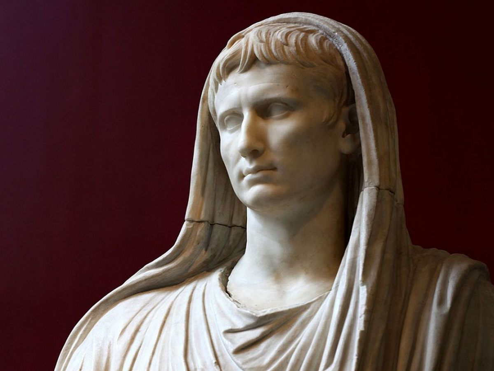
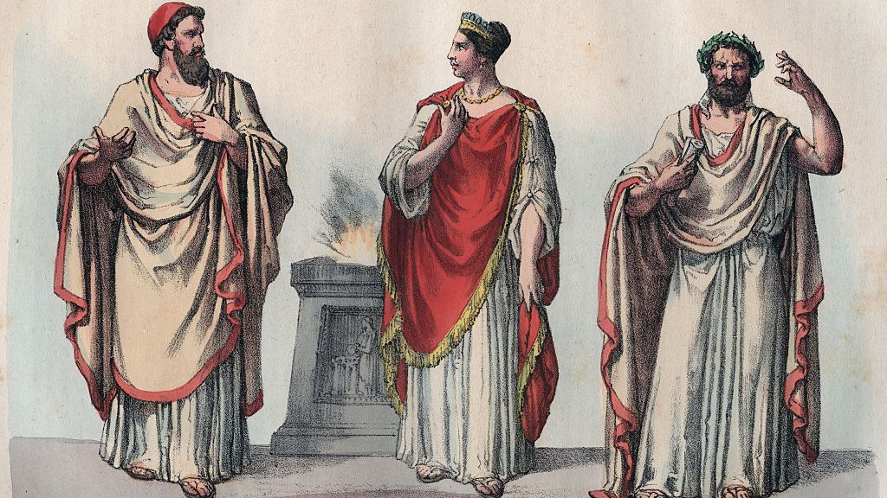
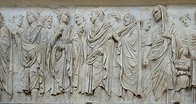
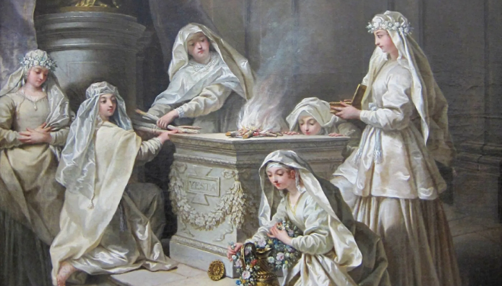
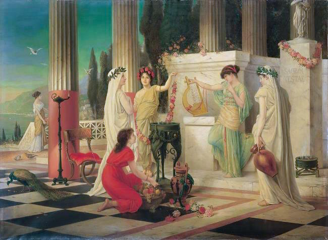

<!DOCTYPE html>
<html lang="en"></html>

<head>
    <title>Rome and Religion</title>
    <link rel="stylesheet" href="style.css">
</head>

<body></body>

<div class="header">

<em><h1>Welcome to the the Religious Page!</h1></em>
<p>This page shall introduce the viewers of this site detailed information about how Romans practiced religion</p>

</div>


<div class="topnav">
<il><a href="Society.html"><p>Society Page! </p></a>
<il><a href="Popular Figures.html"><p>Popular figures Page! </p></a>
<il><a href="index.html"><p>Home Page! </p></a>

</div>

<h2><b><p>An introduction to Religion</p></b></h2>



</div>

<h3><b><p>Pontifex Maximus</p></b></h3>

<body>

<ul>

<li><p>The Pontifex Maximus was the highest chief priest within the Roman religion, it was an office that was open exclusively to men of high birth, however later in 245 BC a Plebeian took the role of Pontifex. The pontifex is noted to have been the most powerful position in Roman priesthood. The image above displays the first Emperor of Rome, Augustus as the Pontifex Maximus in which the position of Pontifex was held by the Emperors during the Imperial period of Roman history.</p></li>
<li><p>In the Roman Republic, the Pontifex Maximus held a huge participation within the public sphere as an important religious figure, equal to a position similar to that of a Pope - the Pontifex Maximus had observed some form of religious sovereignity. The official residence of the Pontifex was the "Domus Publica" which translates to "State House" this stood between the House of the Vestal Virgins and the Via Sarca (A street in ancient Rome).</p></li>
<li><p>During the late Republic period of Roman history, the position of Pontifex Maximus was exclusive to very prominent families, such as Gens Julia (Julia family) for example when Julius Caesar became the Pontifex Maximus in 73 BC and 63 BC.</p></li>
<li><p>The main duties of the Pontifex Maximus was to maintain the "peace of the gods," and the College of Pontiffs was the advisory body for the Pontifex Maximus which consisted of Flamens (priests) and the functions of the Pontifex were usually sacrificial or ritualsitic in nature.</p></li>

</body>

</ul>

<h3><b><p>The Flamens and the King/Queen of Rites</p></b></h3>

<p>There were usually several Flamens within the College of Pontiffs and these flamens were categorised into two categories major and minor flamens. The major flamens were the most important priests, the highest ranked individuals being the Rex and Regina Sacrorum.</p>



<body>

<h3><b><p>The Rex & Regina Sacrorum</p></b></h3>

<body>

<ul>
    <li><p>The Rex and Regina Sacrorum, literally "king of the sacred" and "queen of the sacred" was a senatorial religious position reserved for members of the aristocracy. The King of Rites was the highest religious prestiege beside the Pontifex Maximus and wielded great authority. The spouse of the Rex Sacrorum was the Regina Sacrorum and she was classified as a high ranekd priestess with duties only she could perform. </p></li>
    <li><p>Unlike the Vestal Virgins, the Regina Sacrorum (queen of rites) was not restricted to domestic life for a majority of her duties, she was in fact permitted to share the same equal duties as her husband did and worked alongside him and her office was considered part of his - the same type of tradition of the wives of Roman priests becoming high priestesses was a common practice in the Roman religious structure, for example when a Flamen is married his wife becomes a Flaminica and provides a great deal of aid to his daily duties.</p></li>
    <li><p>In technicality, the position of Rex Sacrorum was ranked higher than that of the Pontifex however only in practice until the position of Pontifex was later taken by Emperors during the Imperial period. In later years, the office of Rex Sacrorum became redundant in religious society and years would pass by where the position of the king of rites would be left vacant. By the time the War of Actium (war against Mark Antony and Cleopatra) had arrived the office was abandoned, however later revived by Rome's first Emperor, Augustus later the position of Rex Sacrorum was completely abolished during the reign of Theodosius the Great.</p></li>
</ul>
</body>

<h2><b><p>Introduction to the Flamens of Rome</p></b></h2>



<p>In Rome, there were several flamens, in which case they were split into two seperate categories. The highest ranked flamen was the Flamen Dialis who was also leader of the crown cult, this would be the Cult of Jupiter as Jupiter is considered to be the King of the Gods. There are three major Flamens and tweleve minor flamens, all of whom had performed duties in dedication to whichever Roman cult they're priest of. Below I shall discuss the major flamens of Rome.</p>


<body>


<em>Major Flamens</em>

<ul>
    <li>Flamen Dialis</li>
    <li>Flamen Martialis</li>
    <li>Flamen Quirinalis</li>


</ul>
</body>

<body>

<em>Minor Flamens</em>

<ul>
    <li>Flamen Carmenta</li>
    <li>Flamen Ceres</li>
    <li>Flamen Falacer</li>
    <li>Flamen Flora</li>
    <li>Flamen Furrina</li>
    <li>Flamen Palatua</li>
    <li>Flamen Pomona</li>
    <li>Flamen Portunus</li>
    <li>Flamen Volcanus (Vulcan)</li>
    <li>Flamen Voltrunus</li>
</ul>
</body>

<h3><b><p>The Flamen Dialis</p></b></h3>

<body>

    <ul>

    <li><p>The name Flamen Dialis is related to that of "Diespiter" in old latin that translates to Jupiter. According to tradition the Flamens were forbidden to touch metal, ride a horse or witness a corpse.</p></li>
    <li><p>The position of Flamen Dialis was created by Numa Pompilus, the second King of Rome, however in spite of creating the position the king himself performed the duties of the Flamen Dialis.</p></li>

</ul>
</body>

<h3><b><p>The Flamen Martialis</p></b></h3>

<body>

    <ul>

        <li><p>The Flamen Martialis was a high ranked priest in Roman history, his office is that of the head of the official state cult of Mars, the god of war. He is one of the major flamens and holds an important significance in a total of fifteen flamens. The Flamen Martialis would have naturally led public rites in dedication to Mars, the God of War. The wife of the flamen was titled Flaminicia Martialis</p></li>
        <li><p>Among the duties of the Flamen Martialis was to perform a ritual ceremony using the sacred spear of Mars when the Roman army was to prepare for war.</p></li>
        <li><p>During the Larentilia festival, the Flamen Martialis would pour water and grain in honour of a mythical goddess named Acca Laurentina, the wife of Faustulus who discovered Remus and Romulus, the founding fathers of Rome.</p></li>

</ul>
</body>


<h3><b><p>The Flamen Quirinalis</p></b></h3>

<body>

    <ul>

        <li><p>The Flamen Quirinalis was the flamen/high priest of Quirinus, God of the Roman state and was the final Flamen listed that had significance within Roman priesthood out of a total of fifteen flamnes. His wife was titled Flaminicia Quirinalis and acted as an assistant to her husband.</p></li>
        <li><p>The Flamen Quirinalis oversaw at least three festivals, the Consualia Aestiva on August 21st, Robigalia on April 25th, and Larentalia on December 23rd. Besides these festivals, there was also the Quirinalia, a festival held in honour of Flamen Quirinus, it was to be hosted on February 17th and is a yearly festival.</p></li>
        <li><p>These festivals were all devoted to the cult of deities of remarkable antiquity, for example; Consus has been described as the god of grains (from condere, to store grains in an underground barn or silos). Robigus was an evil spirit that could cause mildew and therefore damage growth wheat and finally the goddess of the dead (Larenta), who was a figure connected to the legendary times of Rome or to the founding of the city itself.</p></li>


</div>

<h1><b><p>The Vestal Virgins</p></b></h1>




<h3><b><p>Who were the Vestals?</p></b></h3>

<body>

    <ul>
        <li><p>The Vestal Virgins, perhaps one of the most pitiful groups of Roman priests govern over the sacred fire of Vesta, the goddess of hearth and home. In Rome, the Vestals were considered prominent figures charged reassuring the religious safety and continuation of the Roman state.</p></li>
        <li><p>The Vestals were in charge of ensuring that the fire of Vesta is everlasting, in the event that the fire is put out it implied a disaster to the Roman state and this had dire consequences on the Vestal Virgins whose primary domestic duty was to remain at the House of Vesta and ensure that the fire remains intact. The Vestal Collegium was forbidden for men and the House of Vesta was female exclusive.</p></li>

</ul>
</body>

<h3><b><p>Why the term Vestal "Virgin?"</p></b></h3>

<body>

    <ul>
        <li><p>The reason as to why the Vestals are proclaimed "virgins" is because the Vestals, unlike other women of the state these priestesses would not marry until they are released from their duties as a vestal. Vestals were released from the obligation to marry and bear children but at a high price - a 30 year vow of chastity, in the event that Vestals served this long they were released, provided a pension and were then allowed to marry.</p></li>
        <li><p>In the event that the fire was put out, Vestals could face dire consequences including self-burial and false accusations regarding their chastity and they would usually be proven guilty without much or any evidence at all to prove it, this was due to the sacrifical nature of the Roman religion.</p></li>
        <li><p>There were only two Vestal Virgins when the college was officially introduced, however over time that number increased as it later increased to four vestals to six vestals, some debate that there were seven vestals but evidence for this doesn't have a strong reinforcement.</p></li>
</ul>
</body>


<h3><b><p>The Vestalis Maxima</p></b></h3>
<body>

    <ul>
        <li><p>The Vestalis Maxima, literally the "greatest of vestals" was the most senior member of the vestal collegium, her duty was to oversee the Vestal Virgins and was even present alongside members of the College of Pontiffs, which was widely male dominated.</p></li>
        <li><p>The Vestalis Maxima's term legally lasted up to 57 years and the Vestalis Maxima was deemed as the most important Roman priestess within her high ranking category. A unique trait of the Vestalis Maxima is that while the wives of Flamens and the Rex Sacrorum came to their positions due to marriage, the Vestalis Maxima was appointed to her position independently.</p></li>
        
</ul>
</body>

<h3><b><p>Tenure of service</p></b></h3>
<body>

    <ul>
        <li><p>The Vestals were committed to priesthood as young girls at the age of 6-10 years old and are sworn to a vow of chastity for 30 years. Within the three decades that the Vestals served they took up various roles. Naturally, they were students, servants and teachers.</p></li>
        <li><p>The Pontifex Maximus would usually act as the father of the bride on her wedding day after her 30 year servitude to the goddess of Vesta, as per her high status her spouse was someone from a high background, of patrician (noble) status. Marrying a Vestal was thought to be good luck.</p></li>

    </ul>


</body>

<h2><b><p>Life as a Vestal Virgin</p></b></h2>



</body>

<h3><b><p>Selection</p></b></h3>

<il><p>There were several requirements that women needed to have in order to become vestal virgins, some of which were very intriguing and perhaps even discriminatory in nature, however to become a Vestal Virgin was seen as a high honour and gained a Vestal's family strong prestiege, a major attribute in Roman society, a trait of familial attractiveness. The requirements to be a Vestal:</p></il>

<body>


    <ul>
        <li>Free of physical and mental defects</li>
        <li>Lack any elements that indicate orphanage (both parents living)</li>
        <li>Daughter of a free-born citizen of Rome</li>

    </ul>
    </body>

<p> Originally the girl had to be of noble birth however later on within the Roman period women didn't have to be of high birth to enter the Vestal Collegium. The ceremony was nicknamed a "capito" or a 'capture' because the tradition was that the Pontifex Maximus would take the girl from her parents and declare her a vestal, with the words: "I take you, Amata, to be a Vestal priestess, who will carry out sacred rites which it is the law for a Vestal priestess to perform on behalf of the Roman people, on the same terms as her who was a Vestal 'on the best terms' "</p>
<p>As soon as she enters the House of Vesta she was seen as being under the goddess' protection and servitude.</p>

</body>

<h3><b><p>Duty of a Vestal</p></b></h3>
<body>

    <ul>
        <li><p>The primary task of a Vestal is to maintain the fire within the House of Vesta (the temple) it was one of the most important traits of being a vestal above all else, failure to maintain the fire resulted in a harsh punishment.</p></li>
        <li><p>The Vestals would collect water from a sacred spring and prepare food for rituals as well as maintain the precious objects placed within the House of Vesta.</p></li>
        <li><p>It is noted that the Vestals stored prized documents such as wills and other pieces of documentation, the Vestals also maintained the testaments of Julius Caesar and Mark Antony.</p></li>
    </ul>
    </body>

<h3><b><p>Privliges</p></b></h3>
<body>

    <ul>
        <li><p>Although the Vestals were met with heavy pressure to maintain the fire of Vesta and ensure that the peace in Rome observed stability, they also had significant privliges in society and their presence was required in many public ceremonies, due to religion being an important element of life.</p></li>
        <li><p>During their outings, Vestals were provided a carriage, a right of way and even a member of the Lictors Guild to protect them. Vestals also enjoyed a reserved place of honour during public games and performances, their word was trusted without evidence and they could testify and pardon criminals without having to take Rome's customary oath.</p></il>
        <li><p>Surprisingly, Vestals had a huge legal significance in Rome as well and were clearly trusted by many prominent individuals, it's noted that vestals had maintained public treaties, important wills and state documents as it was believed their character wasn't stained by impurity.</p></li>
        <li><p>Their priesthood was considered sacred and therefore anyone who was found to have injured or assaulted a Vestal was met with the death penalty indefinately.</p></li>
        <li><p>Vestals also had the power to free condemned prisoners and slaves by simply touching them, a criminal on their way to die was automatically pardoned in the event that a Vestal decides to pardon them.</p></li>

    </ul>
    </body>

<h3><b><p>Punishments</p></b></h3>
<body>
    
    <ul>
        <li><p>The punishments for Vestals were usually very unpleasant, it is believed that once the fire in the House of Vesta is put out that Vesta had withdrawn her protection from the city of Rome. Vestals who were found guilty of the offense were usually met with whippings and beatings which were carried out in a particular way.</p></li>
        <li><p>Any relationships Vestals had was considered a state act of treason as the Vestals observed a vow of chastity, so it was therefore believed that once the fire was put out a Vestal Virgin had lost her purity and was no longer a virgin. Violating the chastity oath was met with self-burial.</p></li>
</ul>
</body>

<h3><b><p>Festivals</p></b></h3>
<body>
    
    <ul>
        <li><p>The chief festivals of Vesta were the Vestalia celebrated June 7th until June 15th. On June 7th only, her sanctuary (which normally no one except her priestesses the Vestals entered) was accessible to mothers of families who usually brought plates of food. They also gathered grain and had arranged salty cakes for the festival.</p></li>
</ul>
</body>

<h3><b><p>Attire</p></b></h3>
<body> 

    <ul>
        <li><p>Throughout time, the image of the Vestal Virgin has been a woman draped in what appears to be a white dress, believed to indicate purity and chastity.</p></li>
</ul>
</body>


<body>

    <style>
        body {
            background-color: rgb(80, 4, 4) ;
            color:rgb(250, 193, 154)
        }
    
    </style>
    </html>